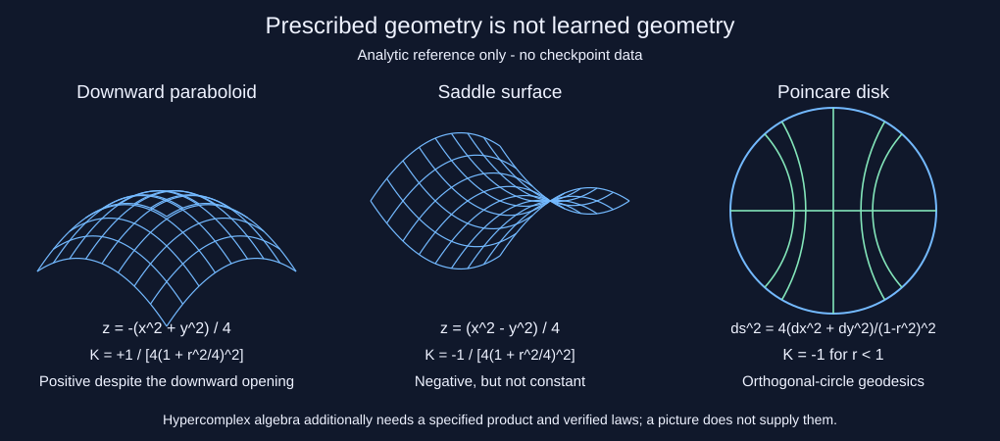

Updated 30 October 2026 · IGBundle is experimental research, not a validated model release.
A local run on 27 October compared base Qwen2.5-7B, an exported merged cp300 checkpoint, and a reconstructed adapter composite. Evaluation used greedy decoding on fixed subsets ranging from 8 to 98 examples. The custom weighted index is descriptive, not a standardized benchmark and not a statistical test.
| Variant | Custom weighted index | Evaluation path |
|---|---|---|
| Base Qwen2.5-7B | 61.1 | Q4_K_M GGUF |
| Merged cp300 | 60.0 | Q4_K_M GGUF; no runtime geometric adapter in the export |
| Reconstructed adapter composite | 64.7 | Surviving base-trained adapter grafted onto cp300; NF4/bf16 path |
None of the per-task paired comparisons was significant. For the reconstructed composite vs cp300, recomputed exact McNemar p-values were 0.625–1.00 (0.63–1.00 rounded in the historical table). The composite was assembled post hoc and was not the original trained checkpoint; different checkpoint assembly and quantization/loading paths prevent isolating a geometric effect. Higher point estimates on some small subsets are not confirmation of benefit.
Download per-task scores, sample sizes, weights, parse failures, and paired p-values.
252 paired recorded grades allow recomputing scores, weighted indices, and exact McNemar tests. This checks arithmetic, not the original graders. No nonsignificant test establishes equivalence or absence of harm.
On 24 examples reported as held out, with 64 tokens scored per example, mean token NLL was 2.3188 for the frozen base, 1.9352 for geometric adapter A, and 0.8187 for vanilla-LoRA control B. B had lower NLL on all 24 pairs. Mean paired difference A − B was 1.1165 (95% paired t interval 0.9144–1.3186). The reproducible two-sided sign-test p-value is 1.1921 × 10−7, distinct from the historical t-test.
This probe is not task accuracy and does not isolate geometry: A had 4,160,713 trainable parameters and one geometric layer; B had 585,728 parameters and 13 LoRA layers. The published file omits prompt text.
Download the 24 prompt-free paired measurements.
A historical file reports 6/6 checks passed, but lacks an immutable source/checkpoint binding. The inspected audit loader allows absent weights (random initialization) and partial state loads. Its transport check is coordinate displacement; its energy check uses squared coordinate norm, not a Hamiltonian. This record is retained for transparency, not as verified operator faithfulness.
For the historical log-determinant proxy with g(x) = λ(x)G and fixed λ, spatial finite differences cancel the position-independent log det G. At fixed coordinates that proxy cannot detect changes in G. Coordinates can still change with training; this does not prove that the actual metric is flat or that every curvature estimator is weight-invariant. The current public branch and historical experimental branch are distinct.
Historical audit record · Inspected audit source snapshot (not bound to that run).
Source hashes and audit limitations · Offline verification output. Current numerical tests cover the Poincare distance and default adapter's small-tensor forward/backward path, not the legacy learned-connection geometry.
| Evaluation | Result | Scope |
|---|---|---|
| ARC-Challenge zero-shot acc_norm | 54.86% adapter; 54.86% base | 1,172 items per run; separate historical protocol |
| Historical ARC-AGI first-test-pair score | 1/100 (1%) reported | Legacy scorer; not all-test-pair task solving; no matched base comparison |
| Model-First Reasoning format compliance | 0/100 | Prompt-format metric, not geometric faithfulness |
Do not compare the October ARC-Challenge subset score directly to the historical zero-shot result. The sample sizes and protocols differ.
The new last-grid-candidate parser scores the saved historical first-pair answers 0/100. The previously accepted answer contains the correct grid followed by a code-array expression, rejected by the new policy. This is parser sensitivity, not new inference or evidence that no correct answer was emitted. The repaired protocol is local, not an official leaderboard evaluator.
| Surviving local export | Inspected directory | Scope |
|---|---|---|
| cp600-named base_model.gguf | 339 tensors: 198 Q8_0, 141 F32; width 3584, 28 blocks | Standard Qwen2 names; distinct from October cp300 |
| qwen_arc_base_0.5B.gguf | 290 tensors: 169 F16, 121 F32; width 896, 24 blocks | Standard Qwen2 names; package README's 7B description does not match this file |
The bounded inspector read 11,900,726 metadata/directory bytes across both files and zero tensor-payload bytes. Its prefix hashes do not identify the full weights. The packaged fast runner uses llama.cpp without the companion adapter. Effects of training in ordinary weights are not ruled out; a geometric or hypercomplex inference path is not established.
cp600-named tensor directory · 0.5B tensor directory · Nine image fingerprints, source excerpts and bounded algebra-name scans.
The thesis loss curve, affinity matrix and singular-value spectrum are constructed from simulated formulas. They are now labeled within the published PNGs. Other inspected generators prescribe curvature, hand-rotate vectors or supply convergence curves; these are not measurements of learned geometry. The historical benchmark chart also compares different tasks and uses heuristic fallbacks.

For the drawn downward paraboloid z = −(x²+y²)/4 with its induced Euclidean metric, K = 1/[4(1+r²/4)²] is positive. A saddle has variable negative curvature; the Poincare disk has constant K = −1 by its prescribed metric. None of these analytic facts establishes learned hyperbolicity. Hypercomplex claims additionally require a specified product, applicable algebraic laws, and a verified model integration path.
Read the complete audit, analytic derivations, coverage, exclusions and reproduction commands. These checks used no model loading, training or GPU work.
Five public HF entry points now require complete default-adapter state. The shared loader checks exact tensor names, shapes, finite values and conversion overflow before copying any adapter tensors. It reads tensor-only state on CPU and does not retry unrestricted pickle loading. Declared PEFT loading errors propagate.
Tiny synthetic checkpoints cover round-trip restoration, rejection without partial mutation, unchanged base weights, and execution of a restored adapter with gradients. Entry-point checks use isolated functions and stubs, not real Transformers/PEFT loading. Partial or differently prefixed historical checkpoints now fail explicitly.
This does not identify a base model, validate archived companion weights, implement a GGUF geometry backend, or establish hypercomplex execution. Full-state mode restores only default-adapter tensors. Exact contract, file requirements and remaining limits.
The public app no longer substitutes synthetic training curves, hard-coded ablation accuracies or invented statistics for missing evidence. Training and ablation panels now explicitly say unavailable. Withdrawn performance, significance and efficiency claims were removed from its UI.
Sigma is a Gaussian standard deviation, not curvature. The heatmap shows categorical probabilities, not pairwise affinities. Entropy and the arbitrary sigma interval counter are descriptive, not geometric faithfulness or quality scores. Missing telemetry is unavailable, not zero.
Observation-weighted summaries support varying decode lengths. Capture retains at most 4,096 sigma samples plus fixed-size summaries; the histogram is labeled as a prefix sample. Repeated context may be counted again. Requests are serialized and capture resets for each request.
Headless checks render tiny-array plots and verify aggregation, missing-data behavior, bounded storage and hook cleanup. A real Gradio interface is constructed with a stubbed model and intercepted launch; no server or inference backend is tested. Exact scope and normalization policy.
Exporter preflight: the public export entry point now requires explicit LoRA-only scope, an exact base identifier, a trusted converter and fresh output paths. Its dry run imports no model backend. Mocked orchestration and bounded GGUF directory checks do not certify real conversion or geometric execution.
The standalone renderer now shows a deterministic prefix of one explicitly selected input-projection matrix. Missing, ambiguous or malformed state fails instead of producing a random scaffold. Filenames no longer select geometry; semantic node metadata is rejected.
The self-contained HTML/SVG embeds a source-file hash, shape, dtype, prefix extent and color scale. Input files are capped at 64 MiB, selected matrices at 4,194,304 values, and plots at 64 x 64 values (32 x 32 in lite mode). This is a trusted-local-file utility, not a deserialization sandbox or proof of complete restoration.
No topology, learned curvature, hypercomplex multiplication or model benefit follows from these parameter values.
A causal evaluation should match parameter budget and layer placement; compare against a vanilla adapter under the same data, objective, optimizer budget, decoding, and hardware; isolate the geometric operator; use multiple seeds and fixed task splits; and publish exact checkpoint provenance with per-task outputs. Operator diagnostics should remain distinct from downstream outcomes.
No efficiency claim is made. The repository does not currently provide a matched, reproducible training-time, inference-latency, or memory comparison supporting earlier percentages.